전기공사산업기사 (2009-08-30 기출문제)
1과목: 전기응용
1. 포토 다이오드(Photo diode)에 관한 설명 중 틀린 것은?
- 온도 특성이 나쁘다.
- 빛에 대하여 민감하다.
- PN 접합에 역방향으로 바이어스를 가한다.
- PN 접합의 순방향 전류가 빛에 대하여 민감하다.
(정답률: 79%)
2. 교류 급전방식 중 흡상변압기에 대한 설명이 아닌 것은?
- 권수비가 1:1이다.
- 전자유도 경감용 변압기이다.
- 전압방식에 무관하게 사용한다.
- 인근 통신선의 유도장애 방지용이다.
(정답률: 78%)
3. 발산하는 빛이 자연주광(自然遒光)에 가장 가까운 특징을 갖는 등은?
- 크세논등
- 나트륨등
- EL 방전등
- 수은등
(정답률: 72%)
4. 전기 기관차의 자중이 150[t]이고, 동륜상의 중량이 95[t]이라면 최대 견인력은 몇 [kgf]인가? (단, 궤조의 점착 계수는 0.2라 한다.)
- 19000
- 25000
- 28500
- 38000
(정답률: 77%)
5. 직접 조명의 장점이 아닌 것은?
- 조명률이 크므로 소비전력은 간접조명의 1/2~1/3이다.
- 설비비가 저렴하며 설계가 단순하다.
- 그늘이 생기므로 물체의 식별이 입체적이다.
- 등기구의 사용을 최소화하여 조명효과를 얻을 수 있다.
(정답률: 65%)
6. 원형과 똑같은 모양의 복제품을 만들며 공예품의 복제, 활자인쇄용 원판 등에 사용되는 것은?
- 전기야금(electrometallurgy)
- 전해연마(electrolytic polishing)
- 전기도금(electroplating)
- 전주(galvanoplastics)
(정답률: 83%)
7. 피드백 제어계에서 가장 중요한 장치는?
- 응답속도를 빠르게 하는 장치
- 안정도를 좋게 하는 장치
- 입·출력 비교장치
- 고주파 발생장치
(정답률: 84%)
8. 다음 중 유전가열의 용도가 아닌 것은?
- 식품 공업
- 기어의 열간전조
- 합성수지의 열처리
- 목재의 건조
(정답률: 63%)
9. 기중기로 150[t]의 하중을 2[m/min]의 속도로 권상시킬 때 필요한 전동기의 용량은 약 몇 [kW]인가? (단, 기계효율은 70[%]이다.)
- 50
- 60
- 70
- 80
(정답률: 84%)
10. 보통 쓰이는 열전대의 조합이 아닌 것은?
- 크롬 - 콘스탄탄
- 구리 - 콘스탄탄
- 철 - 콘스탄탄
- 크로멜- 알루멜
(정답률: 72%)
11. 다음 중 가장 많은 조도가 필요한 장소는?
- 곡선도로
- 교차로
- 직선도로
- 경사도로
(정답률: 70%)
12. 자동제어에서 검출장치로 소형 직류발전기를 하였다. 이것은 다음 중 무엇을 검출하는 것인가?
- 속도
- 온도
- 위치
- 유량
(정답률: 82%)
13. 어떤 종이가 반사율 50[%], 흡수율 20[%] 이다. 여기에 1200[lm]의 광속을 비추었을 때 투과 광속은 몇 [lm]인가?
- 360
- 430
- 580
- 960
(정답률: 77%)
14. 다음 중 내부 가열에 가장 적합한 전기 건조 방식은?
- 고주파 건조
- 적외선 건조
- 자외선 건조
- 아크 건조
(정답률: 67%)
15. 다음 납 축전지에 대한 설명 중 잘못된 것은?
- 납 축전지의 전해액의 비중은 1.2정도이다.
- 납 축전지의 격리판은 양극과 음극의 단락 보호용이다.
- 전지의 내부저항은 클수록 좋다.
- 전지용량은 [Ah]로 표시하며 10시간 방전율을 많이 쓴다.
(정답률: 64%)
16. 전철 전동기에 감속 기어를 사용하는 주된 이유는?
- 동력의 전달
- 전동기의 소형화
- 역률의 개선
- 가격의 저하
(정답률: 85%)
17. 아크 용접에서 전극간 전압 30[V], 전류 200[A]이면 매초 발생한 열량[kal/s]은?
- 2.44
- 24.4
- 1.44
- 14.4
(정답률: 86%)
18. 형광등은 주위 온도가 몇 [℃]일 때 가장 효율이 높은가?
- 5~10
- 10~15
- 20~25
- 35~40
(정답률: 94%)
19. 바리스터(Varistor)를 옳게 설명한 것은?
- 비직선적인 전류-전압 특성을 갖는 2단자 반도체
- 비직선적인 전류-전압 특성을 갖는 4단자 반도체
- 직선적인 전류-전압 특성을 갖는 4단자 반도체
- 직선적인 전류-전압 특성을 갖는 리액턴스 소자
(정답률: 58%)
20. 1[kw]의 전열기를 사용하여 20[℃]의 물 10[ℓ]를 80[℃]까지 올리는데 걸리는 시간은?
- 약 1시간
- 약 30분
- 약 1시간 15분
- 약 42분
(정답률: 70%)
2과목: 전력공학
21. 3300V 배전선로의 전압을 6600V로 승압하고 같은 손실율로 승전하는 경우 송전전력은 승압전의 몇 배인가?
- √2배
- √3배
- 4배
- 9배
(정답률: 40%)
22. 출력 30000kW의 화력발전소에서 6000kal/kg의 석탄을 매시 15t의 비율로 사용하고 있다. 이 발전소의 종합효율은 약 몇 [%]인가?
- 23.7[%]
- 24.7[%]
- 26.7[%]
- 28.7[%]
(정답률: 23%)
23. 다음 중 배전선로의 부하율이 F일 때 손실계수 H와의 관계로 옳은 것은?
- H=F
- H=1/F
- 0≤F2≤H≤F≤1
- H=f3
(정답률: 44%)
24. 다음 보호 계전기 중 어느 일정 방향으로 일정값 이상의 단락 전류가 흘렀을 때 동작하는 계전기로서 역전력 계전기라고도 하는 계전기는?
- 거리 계전기
- 방향 거리 계전기
- 단락 방향 계전기
- 선택 단락 계전기
(정답률: 25%)
25. 보호계전기의 구비 조건으로 틀린 것은?
- 접점의 소모가 크고, 열적 기꼐적 강도가 클 것
- 보호동작이 정확하고 감도가 예민할 것
- 고장 상태를 신속하게 선택할 것
- 조정 범위가 넓고 조정이 쉬울 것
(정답률: 31%)
26. 어느 수용가에 5000kVA 변압기가 있다. 이 변압기 손실은 80% 부하율일 때 53.4kW이고 60% 부하율일 때 36.6kW이다. 이 변압기의 40% 부하율일 때의 손실[kW]은?
- 16.8[kW]
- 19.8[kW]
- 24.6[kW]
- 33.6[kW]
(정답률: 20%)
27. 다음 중 직격뢰에 대한 차폐효과가 가장 큰 것은?
- 가공지선
- 매설지선
- 서지흡수기
- 정전방전기
(정답률: 37%)
28. 다음 중 부하 전류의 차단능력이 없는 것은?
- 부하개폐기(LBS)
- 유압차단기(OCB)
- 진공차단기(VCB)
- 단로기(DS)
(정답률: 37%)
29. 수차의 특유속도(specific speed) Ns[m·kW]를 나타내는 계산식으로 옳은 것은? (단, 유효낙차 : H[m], 수차의 출력 : P[kW], 수차의 정격 회전수 : N[rpm] 이라 한다.)
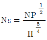
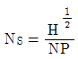
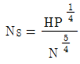
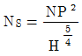
(정답률: 39%)
30. 전력용 콘덴서 회로에 방전코일을 설치하는 주된 목적은?
- 합성 역률의 개선
- 전원 개방시 잔류 전하를 방전시켜 인체의 위험방지
- 콘덴서의 등가용량 중대
- 전압의 파형개선
(정답률: 43%)
31. 3상 3선식 1회선의 가공 송전로에서 D를 등가 선간거리, r을 전선의 반지름이라고 하면 1선당 작용 정전 용량은?
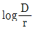
에 비례한다. 에 반비례한다.
에 반비례한다.- D/r에 비례한다.
- D/r에 반비례한다.
(정답률: 42%)
32. SF6 가스차단기를 공기차단기와 비교할 때 옳은 것은?
- 개폐시의 소음이 작다.
- 고속조작이 유리하다.
- 압축공기로 투입한다.
- 지지애자를 사용한다.
(정답률: 39%)
33. 다음 중 피뢰기를 가장 적절하게 설명한 것은?
- 동요전압의 파두, 파미의 파형의 준도를 저감하는 것
- 이상전압이 내습하였을 때 방전에 의해 이상전압을 경감 시키는 것
- 뇌동요 전압의 파고를 저감하는 것
- 1선이 지락될 때 아크를 소멸시키는 것
(정답률: 44%)
34. 다음 중 동일 송전선로에 있어서 1선 지락의 경우 지락전류가 가장 적은 중성점 접지방식은?
- 비접지방식
- 직접접지방식
- 저항접지방식
- 소호리액터접지방식
(정답률: 41%)
35. 154kV 송전선로에서 송전거리가 77km이라고 할 때, 송전용량 계수법에 의한 송전용량은? (단, 송전용량계수는 1200 이라고 한다.)
- 2.4[㎿]
- 4.16[㎿]
- 152.2[㎿]
- 369.6[㎿]
(정답률: 35%)
36. 원자로에서 제어봉으로 카드윰(Cd)을 사용하는 목적으로 가장 알맞은 것은?
- 중성자의 수를 조절한다.
- 핵 융합을 시킨다.
- 핵 분열을 일으킨다.
- 생체차폐를 한다.
(정답률: 33%)
37. 다음 중 송배전 선로에서 내부 이상 전압에 속하지 않는 것은?
- 유도뢰에 의한 이상 전압
- 개폐 이상 전압
- 사고시의 과도 이상 전압
- 계통 조작과 고장시의 지속 이상 전압
(정답률: 44%)
38. 변전소로부터 특별고압 3상 3선식의 가공전선로로 수전하고 있는 공장이 있다. 이 공장의 부하전력은 40000[kW]이고 뒤진 역률 90%, 수전전압은 70000V라 한다. 부하전류는 약 몇 [A]인가?
- 323[A]
- 367[A]
- 397[A]
- 423[A]
(정답률: 32%)
39. 다음 중 코로나 방지대책으로 적당하지 않은 것은?
- 전선의 외경을 크게 한다.
- 선간거리를 감소시킨다.
- 복도체를 사용한다.
- 가선 금구를 개량한다.
(정답률: 35%)
40. 차단기의 정격차단 시간으로 알맞은 것은?
- 고장발생부터 소호까지의 시간
- 가동접촉자 시동부터 소호까지의 시간
- 트립코일 여지부터 가동접촉자 시동까지의 시간
- 트립코일 여지부터 아크 소호까지의 시간
(정답률: 35%)
3과목: 전기기기
41. 직류 분권전도이가 있다. 단자전압 215[V], 전기자전류 100[A], 1500[rpm]으로 운전되고 있을 때 발생 토크는 약 몇[Nm]인가? (단, 전기자 저항 ra = 0.1[Ω]이다.)
- 120.6
- 130
- 191.1
- 291.1
(정답률: 30%)
42. 어느 변압기의 퍼센트 저항강하가 p[%], 퍼센트 리액턴스강하가 퍼센트 저항강하의 1/2이거, 역률 80[%](지익률)인 경우의 전압변동률[%]은?
- 1.0
- 1.1
- 1.2
- 1.3
(정답률: 26%)
43. 다음 중 직류 전동기의 전기제동법이 아닌 것은?
- 플러깅(plugging)
- 회생제동
- 발전제동
- 직류제동
(정답률: 31%)
44. 일정한 부하에서 역률 1로 동기전동기를 운전하는 중 여자를 약하게 하면 전기자 전류는?
- 진상전류가 되고 증가한다.
- 진상전류가 되고 감소한다.
- 지상전류가 되고 증가한다.
- 지상전류가 되고 감소한다.
(정답률: 24%)
45. 출력 P, 슬립 s로 운전할 때 2차동손은?
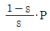
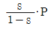
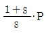
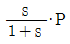
(정답률: 27%)
46. 다음 중 워드 레오나드(Wardleonard) 방식의 목적은?
- 정류개선
- 계자자속조정
- 속도제어
- 병렬운전
(정답률: 29%)
47. 유도 전동기의 기동 계급은?
- 19 계급
- 23 계급
- 26 계급
- 30 계급
(정답률: 20%)
48. 동기전동기의 V곡선(위상특성)에 대한 설명으로 틀린 것은?
- 횡축에 여자전류를 나타낸다.
- 종축에 전기자전류를 나타낸다.
- 동일출력에 대해서 여자가 약한 경우가 뒤진 역률이다.
- V곡선의 최저점에는 역률이 0(%)이다.
(정답률: 31%)
49. 3상 권선형 유도전동기의 전부하 슬립이 4[%], 2차 1상의 저항이 0.3[Ω]이다. 이 전동기의 기동 토크를 전부하 토크와 같도록 하려면 외부에서 2차 삽입할 저항은?
- 5.8Ω
- 6.7Ω
- 7.2Ω
- 8.3Ω
(정답률: 22%)
50. 60[Hz]의 변압기에 50[Hz]의 동일 전압을 가했을 때의 자속 밀도는 60[Hz]때의 몇 배인가?
- 6/5
- 5/6
- (5/6)1.5
- (6/5)2
(정답률: 24%)
51. 인가전압이 일정할 때 변압기의 와류손은?
- 주파수에 무관
- 주파수에 비례
- 주파수에 역비례
- 주파수의 제곱에 비례
(정답률: 21%)
52. 변압기의 철손과 동손을 같게 설계하면 어떤 부하일 때 최대효율이 되는가?
- 전부하시
- 3/2부하시
- 2/3부하시
- 1/2부하시
(정답률: 24%)
53. 유동전동기의 원선도 작성시 필요치 않은 시험은?
- 무부하시험
- 슬립측정
- 구속시험
- 저항측정
(정답률: 38%)
54. 분로권선 및 직렬권선 1상에 유도되는 기전력을 각각 E1, E2[V]라 하고 회전자를 0°에서 180°까지 변화시킬 때 3상 유도전압조정기의 출력측 선간 접압의 조정 범위는?
- (E1±E2)√3
- √3(E1±E2)
- (E1-E2)
- 3(E1+E2)
(정답률: 39%)
55. 다음 중 정전압형 발전기가 아닌 것은?
- 로젠베르그 발전기
- 제3브러시 발전기
- 직류 분권발전기
- 로토트롤 발전기
(정답률: 18%)
56. 다음은 직권 정류자 전동기의 브러시에 의하여 단락되는 코일내의 변압기 전압(et)과 리액턴스 전압(er)의 크기가 부하전류 I의 변화에 따라 어떻게 변화하는가를 설명한 것이다. 옳은 것은?
- et는 I가 증가하면 감소한다.
- et는 I가 증가하면 증가한다.
- er는 I가 증가하면 감소한다.
- er는 I가 증가하면 증가한다.
(정답률: 25%)
57. SCR에 대한 설명으로 옳은 것은?
- 턴온을 위해 게이트 펄스가 필요하다.
- 게이트 펄스를 지속적으로 공급해야 턴온 상태를 유지할 수 있다.
- 양방향성의 3단자 소자이다.
- 양방향성의 3층 구조이다.
(정답률: 29%)
58. 200[V], 7.5[kW], 6극 3상 유도전동기가 있다. 정격전압으로 기동할 때 기동전류는 정격전류의 615[%], 기동토크는 전부하 토크의 225[%]이다. 지금 기동 토크를 전부하 토크의 150[%]로 하려면 기동전압은 약 몇 [V]인가?
- 163
- 182
- 193
- 202
(정답률: 26%)
59. 동기전동기에 관한 설명으로 옳은 것은?
- 기동 토크가 크다.
- 기동조작이 간단하다.
- 역율을 조정할 수 없다.
- 속도가 일정하다.
(정답률: 25%)
60. 전압이나 전류의 제어가 불가능한 소자는?
- IGBT
- SCR
- GTO
- Diode
(정답률: 44%)
4과목: 회로이론
61. 다음 파형의 파형률과 파고률을 더한 값은?
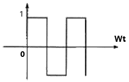
- 1
- 2
- 2.51
- 3.57
(정답률: 33%)
62. 3상 부하가 Y결선으로 되었다. 각 상의 임피던스가 각각 Za=3[Ω], Zb=3[Ω], Zc=j3[Ω]이다. 이 부하의 임피던스[Ω]는?
- 3+j3[Ω]
- 3+j6[Ω]
- 6+j3[Ω]
- 2+j[Ω]
(정답률: 23%)
63. 선형 회로망에서 4단자 정수 A, B, D의 크기가 각각 1.02, 2[Ω], 1.02 이면 C는 약 얼마인가?
- 0.52[Ω]
- 0.52[℧]
- 0.02[Ω]
- 0.02[℧]
(정답률: 18%)
64. 저항과 콘덴서를 병렬로 접속한 회로에서 직류 100[V]를 가하면 5[A]가 흐르고, 교류 300[V]를 가하면 25[A]가 흐른다. 이때 콘덴서의 리액턴스[Ω]는?
- 7[Ω]
- 10[Ω]
- 14[Ω]
- 15[Ω]
(정답률: 26%)
65. R - L - C 직렬회로에 t=0에서 직류전압 E를 가할 때
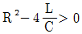
이면 이 회로는?- 진동적이다.
- 비진동적이다.
- 임계적이다.
- 비감쇠진동이다.
(정답률: 36%)
66. 시간함수 1-cosωt를 라플라스 변환하면?
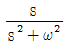
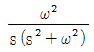
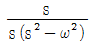
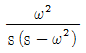
(정답률: 38%)
67. 다음과 같은 회로에서 선형저항 3[Ω] 양단의 전압은?
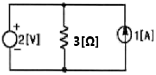
- 4.5[V]
- 3[V]
- 2.5[V]
- 2[V]
(정답률: 28%)
68. 임피던스 함수
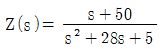
으로 주어진 2단자 회로망에 직류전압 100[V]를 인가했을 때 이 회로에 흐르는 전류[A]는?- 1[A]
- 2[A]
- 5[A]
- 10[A]
(정답률: 30%)
69. 다음 회로에서 t=0 일 때 스위치 K를 닫았다. i1(0+), i2(04)의 값은? (단, t＜0에서 C전압과 L전압은 각각 0 이다)
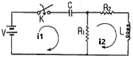
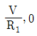
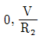
- 0, 0
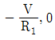
(정답률: 28%)
70. 기본파의 전압이 100[V]이고, 제3고조파 전압이 30[V], 전압파의 왜형률이 50[%]이면 제5고조파 전압은 몇 [V]인가?
- 10[V]
- 20[V]
- 30[V]
- 40[V]
(정답률: 30%)
71. Z = 8 + j6[Ω]인 평형 Y 부하에 선간전압 200[V]인 대칭3상 전압을 가할 때 선전류는 약 몇 [A] 인가?
- 20[A]
- 11.5[A]
- 7.5[A]
- 5.5[A]
(정답률: 39%)
72. 그림과 같은 회로에서 스위치 S를 닫았을 때 시정수[S]의 값은? (단, L = 10[mH], R = 20[Ω]이다)
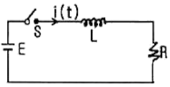
- 2000[S]
- 5 ×10-4[S]
- 200[S]
- 5 ×10-3[S]
(정답률: 37%)
73. 다음의 사다리꼴 회로에서 출력접안 VL은 몇 [V] 인가?
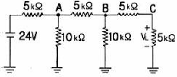
- 2[V]
- 3[V]
- 4[V]
- 6[V]
(정답률: 32%)
74.
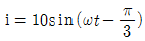
[A]로 표시되는 전류파형보다 위상이 30° 앞서고, 최대치가 100[V]인 전압파형을 식으로 나타내면?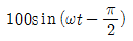
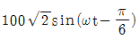
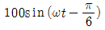
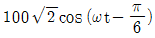
(정답률: 26%)
75. 전압 [V]의 파형
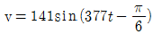
의 주파수는?- 50[Hz]
- 60[Hz]
- 100[Hz]
- 377[Hz]
(정답률: 40%)
76. 라플라스 변환함수 1/s(s+1)에 대한 역라플라스 변환은?
- 1+e-t
- 1-e-t
- 1/1-e-t
- 1/1+e-t
(정답률: 33%)
77. 어떤 코일에 흐르는 전류를 0.5[ms] 동안에 5[A]로 변화시킬 때 20[V]의 전압이 발생한다. 자기 인덕턴스[mH]는?
- 2[mH]
- 4[mH]
- 6[mH]
- 8[mH]
(정답률: 29%)
78. 한 상의 임피던스가 8 + j6 [Ω]인 평형 △부하에 상전압 200[V]를 인가할 때 3상 전력[kW]은?
- 3.2[kW]
- 4.8[kW]
- 9.6[kW]
- 10.2[kW]
(정답률: 25%)
79. 100[V], 800[W], 역률 80[%]인 교류회로의 리액턴스는 몇 [Ω] 인가?
- 12[Ω]
- 10[Ω]
- 8[Ω]
- 6[Ω]
(정답률: 18%)
80. 전류 I = 30 sinωt + 40 sin (3ωt+45°)[A]의 실효값은 약 몇 [A] 인가?
- 25[A]
- 35.4[A]
- 50[A]
- 70.7[A]
(정답률: 31%)
5과목: 전기설비
81. 고압 가공전선의 높이는 철도 또는 궤도를 횡단하는 경우 레일면상 몇 [m] 이상이어야 하는가?
- 5
- 5.5
- 6
- 6.5
(정답률: 47%)
82. 저압 가공 전선로와 가공 약전류 전선로가 병행 설치되는 경우, 유도작용에 의하여 통신상의 장해가 미치지 아니하도록 하기 위한 최소 이격 거리는 몇 [m] 인가?
- 2.5
- 2.0
- 1.5
- 1.0
(정답률: 22%)
83. 특별고압전로와 비접지식 저압전로를 결합하는 변압기로서 그 특별고압 권선과 저압 권선간에 혼촉방지판이 있는 변압기에 접속하는 저압 옥상전선로의 전선으로 사용할 수 있는 것은?
- 케이블
- 절연전선
- 경동연선
- 강심알루미늄선
(정답률: 45%)
84. 전체의 길이가 16m이고 설계하중이 6.8kN 초과 9.8kN 이하인 철근 콘크리트주를 논, 기타 지반이 연약한 곳 이외의 곳에 시설할 때, 묻히는 깊이를 2.5m 보다 몇[㎝] 가산하여 시설하는 경우에는 기초의 안전율에 대한 고려 없이 시설하여도 되는가?
- 10
- 20
- 30
- 40
(정답률: 34%)
85. 발전기에서 자동적으로 전로로부터 차단하는 장치를 시설하여야 하는 경우가 아닌 것은?
- 용량이 5000kVA 이상인 발전기의 내부에 고장이 생긴 경우
- 용량이 500kVA 이상인 발전기의 구동하는 제어장치의 전원전압이 현저히 저하한 경우
- 용량이 2000kVA 이상인 수차발전기의 스러스트 베어링의 온도가 현저히 상승한 경우
- 발전기에 과전류가 생긴 경우
(정답률: 20%)
86. 저압 연접 인입선의 시설에 맞지 않는 것은?
- 인입선에서 분기점까지 100m를 넘는 지역에 미치지 아니할 것
- 폭 5m를 넘는 도로를 횡단하지 아니할 것
- 옥내를 통과하지 아니할 것
- 전선은 1.6mm의 경동선 또는 동등이상의 세기 및 굵기의 것
(정답률: 28%)
87. 교통신호등의 제어장치의 금속제 외함에는 몇 종 접지공사를 하여야 하는가?
- 제1종
- 제2종
- 제3종
- 특별 제3종
(정답률: 40%)
88. 지중 전선로는 기설 지중 약전류 전선로에 대하여 다음의 어느 것에 의하여 통신상의 장해를 주지 아니하도록 기설약전류 전선로로부터 충분히 이격시키는 등의 조치를 취하여야 하는가?
- 충전전류 또는 표피작용
- 충전전류 또는 유도작용
- 누설전류 또는 표피작용
- 누설전류 또는 유도작용
(정답률: 35%)
89. 일반 주택 및 아파트 각 호실의 현관에 조명용 백열 전등을 설치할 때 사용하는 타임 스위치는 몇 분 이내에 소등되는 것을 시설하여야 하는가?
- 1분
- 3분
- 5분
- 10분
(정답률: 43%)
90. 직류식 전기철도에서 배류선은 상승부분 중 지표상 몇[m] 미만의 부분에 대하여는 절연전선 · 캡타이어 케이블 또는 케이블을 사용하고, 사람이 접촉할 우려가 없고 또한 손상을 받을 우려가 없도록 시설하여야 하는가?
- 2.0
- 2.5
- 3.0
- 3.5
(정답률: 18%)
91. 고압 또는 특별고압 전로 중 기계기구 및 전선을 보호하기 위해 필요한 곳에는 어떤 것을 반드시 시설하여야 하는가?
- 계기용변성기
- 전력용콘덴서
- 과전류차단기
- 직렬리액터
(정답률: 35%)
92. 고압 보안공사를 할 때 지지물로 B종 철근 콘크리트주를 사용하면 그 경간이 최대는 몇 [m] 인가?
- 75
- 100
- 150
- 200
(정답률: 20%)
93. 3.3kV용 계기용변성기의 2차측 전로의 접지공사는?
- 제1종 접지공사
- 제2종 접지공사
- 제3종 접지공사
- 특별 제3종 접지공사
(정답률: 17%)
94. 다음 중 고압 옥내배선 공사에 시설되지 않는 것은?
- 애자사용 공사
- 합성수지관 공사
- 케이블 공사
- 케이블 트레이 공사
(정답률: 32%)
95. 폭연성 분진 또는 화약류의 분말이 전기설비가 발화원이 되어 폭발할 우려가 있는 곳에 시설하는 저압 옥내 전기설비의 배선공사를 할 수 있는 것은?
- 애자사용공사
- 캡타이어 케이블공사
- 합성수지관공사
- 금속관공사
(정답률: 29%)
96. 3kV의 고압 옥내 배선을 케이블 공사로 설계하는 경우 사용할 수 없는 케이블은?
- 연피 케이블
- 비닐 외장 케이블
- MI 케이블
- 클로로프렌 케이블
(정답률: 30%)
97. 345kV 특별 고압 송전선을 사람이 용이하게 들어가지 않는 산지에 시설할 때 전선의 지표상 최소 높이는 몇[m]인가?
- 7.28
- 7.85
- 8.28
- 9.28
(정답률: 32%)
98. 사용전압이 25000V를 넣고 60000V이하인 특별고압 가공전선로에서 전화선로의 길이 12km마다의 유도전류는 몇[㎂]를 넘지 아니하도록 하여야 하는가?
- 1
- 2
- 3
- 5
(정답률: 29%)
99. 제1종 접지 공사시에 접지극은 지하 몇 [cm] 이상의 깊이에 매설하는가?
- 30
- 50
- 75
- 100
(정답률: 36%)
100. 특별고압 가공 전선로에서 단주를 제외한 철탑의 경간은 몇 [m]이하로 하여야 하는가?
- 400
- 500
- 600
- 700
(정답률: 37%)